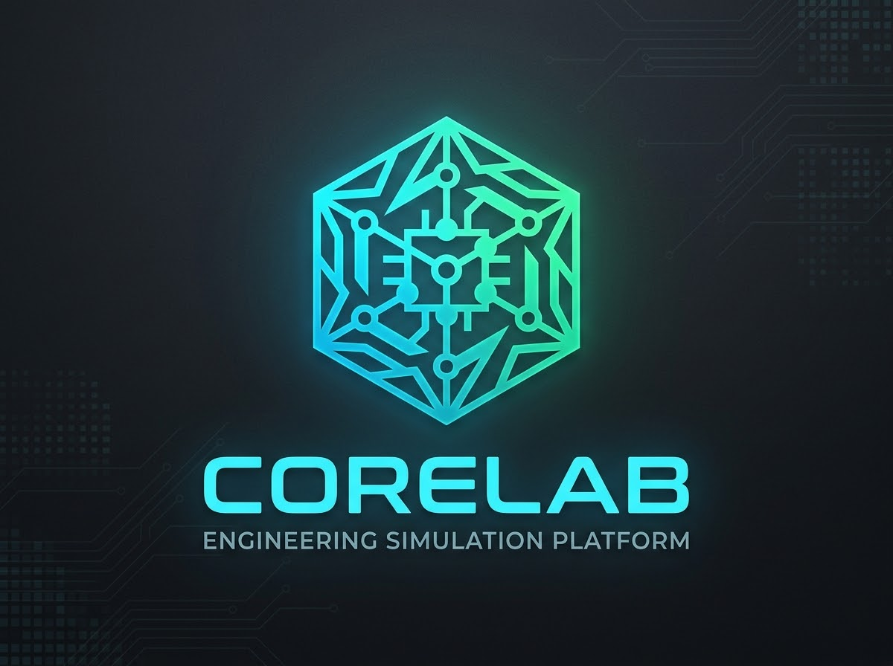

Aprender no debería pesar tanto.
Convertimos el temario en algo que se resuelve.
01 · El problema
La información no falta.
Sobra.
En el aula
- 01300 diapositivas para 3 ideas.
- 02Se aprueba, no se aprende.
- 03El fallo se descubre en el examen.
- 04Nada invita a volver mañana.
- 05200 páginas de onboarding sin leer.
- 06Siguiente, siguiente, aceptar.
- 07El criterio vive en una sola cabeza.
- 08Nadie sabe quién sabe qué.
02 · La idea
Convertir el temario
en un incidente.
01
Un incidente, no un tema.
Cada concepto llega como una avería con alguien esperando el diagnóstico.
02
Escribes, no eliges.
Primero respondes de memoria. El test es la red de seguridad, no el atajo.
03
Certificas, no apruebas.
El progreso es una carrera técnica, no una nota al final del cuatrimestre.
Temario
→
Incidente
→
Diagnóstico
→
Certificación
03 · El proyecto
Una planta que falla.
Y tú de guardia.
Panel de diagnóstico · Módulo 1
Infraestructura Física
Técnico Junior
¿Qué dispositivo es el «cerebro» directo de la maquinaria?
> Escribe tu diagnóstico
01
Infraestructura Física
Sensores, PLC, actuadores y SCADA.
02
Redes Industriales
IP, segmentación y la frontera IT / OT.
03
Protocolos OT
Modbus, OPC UA, IEC 104.
04
Diagnóstico de Averías
Capa física, red y aplicación.
05
Ciberseguridad Industrial
Disponibilidad, safety e intrusiones.
Nivel 1Técnico JuniorIncidentes básicos
Nivel 2Operador CertificadoIncidentes críticos
Nivel 3Ingeniero de SistemasFallos mayores
FinalArquitecto de InfraestructuraCertificación final
Seis decisiones
para ocho problemas.
Briefing de un párrafoToda la teoría del módulo en una pantalla, y solo si la pides.
resuelve 01
El incidente es el enunciadoDiagnosticas una estación de bombeo caída, no recitas una definición.
resuelve 02 · 05
Corrección en el mismo segundoAciertas o fallas y sabes por qué, al instante.
resuelve 03
Modo contingenciaSi el diagnóstico escrito falla, bajan cuatro opciones. Nadie se queda fuera.
resuelve 03 · 04
XP, logros y ligasProgreso visible y comparable: una razón para volver mañana.
resuelve 04 · 06
Certificación por móduloEl avance deja rastro: quién domina qué, y a qué nivel.
resuelve 07 · 08
04 · Más allá del aula
El motor no sabe
de qué va el temario.
Cambia el banco de incidentes y cambias de sector.
01
Ingeniería y plantaAverías, protocolos y seguridad industrial.
02
Gestión de proyectosRiesgos, desviaciones y decisiones de alcance.
03
OnboardingLa primera semana como una serie de casos.
04
Cumplimiento y seguridadProtocolos que se practican, no que se firman.
05
Comercial y productoObjeciones de cliente como retos con respuesta.
06
Cualquier equipoDonde hay criterio experto, hay incidentes.
Conocimiento experto
→
Banco de incidentes
→
Equipo certificado
Que el trabajo
no parezca trabajo.
Aprender lo que importa. Sin el papeleo alrededor.